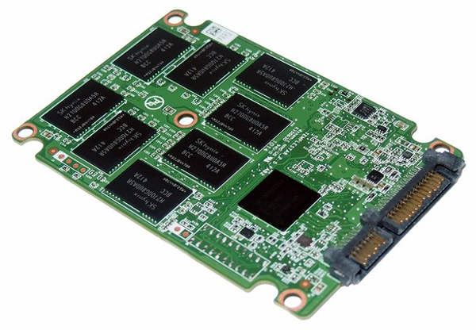
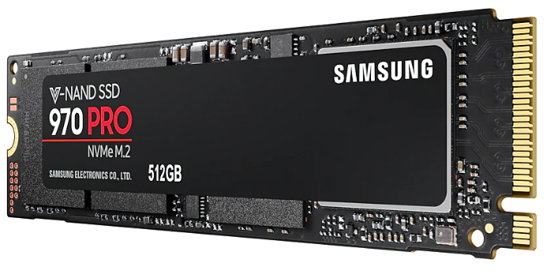

El “Estado Sólido”, es un término empleado para referirse a componentes electrónicos construidos enteramente de semiconductores. En términos simples el SSD se deshace del almacenamiento magnético (el “disco” que hemos visto hasta ahora) para darnos un almacenamiento sólido, sin partes movibles. De hecho, los SSD y nuestra típica memoria USB comparten muchas similitudes, pues los chips de almacenamiento que utilizan son los mismos o muy similares.
Las ventajas de los discos SSD son:
- Consumen menos energía: al no tener que estar girando un disco extremadamente rápido, los discos duros SSD consumen menos energía.
- Mucha mayor velocidad: los SSD pueden alcanzar una mucha mayor velocidad, al no estar restringidos a cuántas revoluciones por minuto puede dar un disco para leer datos. Sobre todo en acceso y lectura, la diferencia es muy alta. Por ejemplo, se puede llegar a cargar todo un sistema operativo en muy poco tiempo (3-6 segundos). En realidad, la principal ventaja no es el ancho de banda de lectura/escritura (aunque este ancho de banda es mucho mayor) sino el tiempo medio de acceso, que es casi instantáneo en un SSD y tremendamente lento en un HD magnético.
- Desaparece el ruido y la producción de calor
Las desventajas de los discos SSD son:
- Tienen un período de vida menor al de los discos duros tradicionales: El tipo de memoria utilizada por los SSD tienen un número finito de escrituras realizables, al igual que las memorias USB.
- Precio muy alto: El precio por MB de SSD es mucho más alto que el precio por MB en discos duros “normales”. Aunque el SSD está bajando de precio rapidísimamente,
- Menor recuperación. Si estos discos fallan, la información es irrecuperable, mientras que en los HD tradicionales suele ser recuperable, aunque a veces el método de recuperación sea complicado.
Interfaces
Los discos duros SSD ya tienen anchos de banda mayores que los 600 MB/s que permite SATA en sus versiones más potentes, lo que crea un “cuello de botella” en los equipos actuales. Para intentar evitar esto se ha buscado un bus o interfaz más rápido que el SATA para conectar nuestros HD, y un interfaz que cumple estas características es el PCI Express que normalmente se usa para conectar tarjetas gráficas de alta gama. Para ello se utiliza el standard SATA Express.
Mientras que SATA Express presenta la ventaja de que utiliza el mismo tipo de conexiones físicas internas que SATA, pero utilizando el bus PCI Express, tiene la desventaja de que su tamaño es bastante grande (está pensado para tarjetas gráficas) y que estos puertos no nos los solemos encontrar en portátiles. Es por ello que se ha pensado en utilizar el bus M.2. (conocido anteriormente como NGFF). Este bus M.2. está presente en muchos portátiles y se utilizaba principalmente para conectar tarjetas de red de alta velocidad.